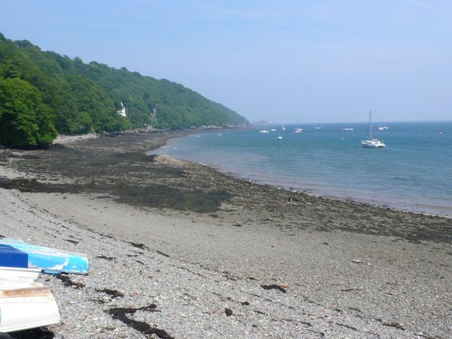
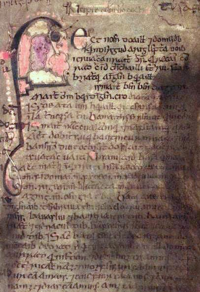
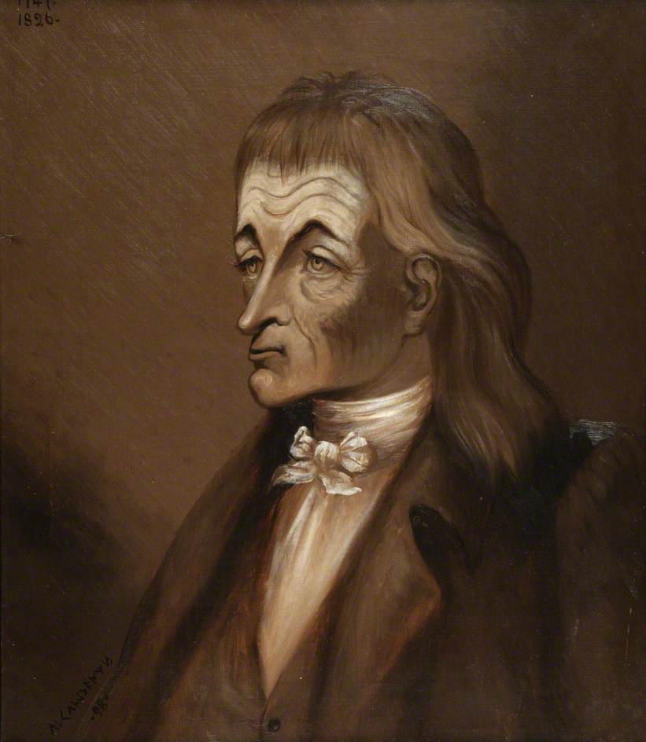

História das religiões · Arqueologia · Literatura · Religião contemporânea
Paganismo Celta e Druidismo
Entre religião antiga, tradição oral, conquista romana, literatura medieval e reconstrução espiritual moderna.
“Celta” e “druida” atravessam mais de dois milênios de fontes fragmentárias, releituras medievais e renascimentos modernos. Esta página separa essas camadas para mostrar o que sabemos — e como sabemos.
Começar pela distinção essencialDruidismo contemporâneo não é uma continuação intacta da religião céltica antiga
Movimentos atuais utilizam pesquisa histórica, literatura, revivalismos e novas práticas. A existência de inspiração antiga não demonstra uma transmissão institucional contínua desde a Idade do Ferro. [7]
Nesta página
Antes de procurar “a religião dos celtas”
O que era?
Sociedades hoje associadas ao mundo céltico possuíam tradições religiosas diversas, sem uma igreja ou credo internacional único. [1]
Quem eram os druidas?
Autores antigos os descrevem, em alguns contextos, como especialistas de religião, ensino, julgamento e transmissão oral. [2]
O que sobreviveu?
Arqueologia, inscrições, textos greco-romanos e literatura medieval preservam fragmentos diferentes — nenhum deles é uma “Bíblia druídica”.
Existe hoje?
Sim, como movimentos modernos diversos, que combinam revivalismo, reconstrução, natureza, arte, ritual e novas interpretações. [12]
Não estamos falando de uma única coisa
Religiões célticas antigas
Práticas e cultos de diferentes sociedades da Europa da Idade do Ferro e do período romano.
●●● História / arqueologiaDruidas históricos
Especialistas descritos sobretudo por autores gregos e romanos, com fontes externas e politicamente situadas.
●●○ Fontes textuaisLiteratura medieval
Narrativas irlandesas e galesas registradas em sociedades cristianizadas, séculos depois de muitos contextos antigos.
●●● MedievalRevivalismo
Antiquarianismo, romantismo e reinvenções dos séculos XVIII–XIX, incluindo Iolo Morganwg.
●●● Moderno históricoDruidismo contemporâneo
Religiões e espiritualidades atuais inspiradas por natureza, literatura, patrimônio, reconstrução e criatividade.
◇ Tradição modernaDa Idade do Ferro à reinvenção moderna
Datas antigas servem para contextualizar processos; elas não transformam “os celtas” em uma sociedade única e homogênea.
Sociedades da Idade do Ferro
Arqueologia revela santuários, depósitos votivos, sepultamentos e objetos ritualizados em diferentes regiões da Europa Ocidental e Central. [1]
Mona / Anglesey
Tácito narra o ataque romano à ilha e a destruição de bosques sagrados, em um texto carregado de linguagem hostil aos adversários. [3]
Narrativas registradas em manuscritos
Textos irlandeses e galeses preservam tradições literárias valiosas, mas foram escritos em contextos cristãos e não funcionam como transcrições diretas da religião da Idade do Ferro.
Renascimento druídico
Antiquários, poetas e movimentos culturais constroem novas tradições. Iolo Morganwg torna-se um caso central de criatividade, nacionalidade e falsificação documental. [6]
Druidismos modernos
Ordens, grupos reconstrucionistas e praticantes independentes desenvolvem caminhos religiosos diversos, frequentemente ligados à natureza e à criatividade. [12]
Quatro tipos de fonte — quatro limites diferentes
Arqueologia
Força: alta para cultura materialSantuários, oferendas, sepultamentos, inscrições e objetos ajudam a reconstruir práticas.
Limite: um objeto raramente explica sozinho o significado que tinha.Autores greco-romanos
Força: testemunhos antigosCésar, Tácito e outros descrevem druidas e práticas religiosas.
Limite: são observadores externos, com interesses políticos e convenções literárias.Literatura medieval
Força: tradição literária excepcionalTextos irlandeses e galeses preservam narrativas, nomes, lugares e memória cultural.
Limite: foram escritos séculos depois, em ambientes cristãos.Tradições modernas
Força: documentam o presenteOrdens e comunidades atuais explicam bem suas próprias crenças e práticas.
Limite: não comprovam automaticamente o que ocorria na Idade do Ferro.Regra: quanto mais fontes independentes convergem — e quanto melhor entendemos o contexto de cada uma — maior a segurança da reconstrução histórica.
Especialistas religiosos — e talvez muito mais
César atribui aos druidas funções religiosas, julgamento de disputas, ensino prolongado e memorização de grande quantidade de versos. [2]
Religião e ritual
Associados por fontes antigas a sacrifícios e assuntos religiosos.
Ensino
César fala em treinamento de longa duração e transmissão oral.
Julgamento
São descritos como mediadores de disputas públicas e privadas.
Memória
A recusa ou limitação do registro escrito em certos ensinamentos aparece nas fontes, embora seu alcance seja debatido.
Influência social
A literatura antiga sugere prestígio e autoridade, mas não prova uma estrutura idêntica em todas as sociedades.
Temas documentados ou sugeridos — não um credo universal
Divindades ●●●
Inscrições e fontes romanas preservam numerosos nomes divinos, frequentemente locais ou regionalizados. A diversidade é parte da evidência.
Morte e alma ●●○
César atribui aos druidas a ideia de que a alma não perece e passa de um corpo para outro. É um testemunho antigo, não uma confissão de fé escrita pelos próprios druidas.
Águas e fontes ●●●
Depósitos votivos, santuários e inscrições mostram usos religiosos de fontes, rios e outros lugares aquáticos em contextos específicos.
Bosques e paisagem ●●○
Textos antigos e evidências arqueológicas indicam importância ritual da paisagem, mas a ideia moderna de “religião ecológica celta” exige cautela.
Animais e objetos ●●○
Iconografia e depósitos rituais evidenciam relações simbólicas, sem permitir uma tradução única para todos os contextos.
Oferendas ●●●
Objetos votivos e depósitos deliberados estão entre as evidências materiais mais consistentes de práticas religiosas.
Irlanda medieval
Lugh, Brigid, Dagda e Morrígan aparecem em tradições literárias medievais. Isso não garante que cada personagem corresponda exatamente a uma divindade cultuada da mesma forma séculos antes.
Gália e mundo romano-celta
Inscrições, iconografia e interpretatio romana fornecem um conjunto diferente de evidências, muitas vezes mais próximo do período antigo.
País de Gales
A literatura galesa medieval preserva personagens e ciclos próprios. “Mitologia céltica” é uma categoria comparativa, não um panteão uniforme.
Samhain, Imbolc, Beltane e Lughnasadh: histórico e moderno não são a mesma camada
Samhain
Histórico/medieval: nome e tradições aparecem em materiais irlandeses medievais e posteriores.
Moderno: movimentos pagãos podem reinterpretá-lo dentro de calendários religiosos contemporâneos.
Imbolc
Histórico/medieval: festa sazonal irlandesa preservada em tradição textual e folclórica.
Moderno: pode receber novas associações religiosas e ecológicas.
Beltane
Histórico/medieval: tradições de início da estação clara são documentadas em contexto irlandês.
Moderno: integra calendários padronizados que não devem ser projetados automaticamente sobre toda a Antiguidade céltica.
Lughnasadh
Histórico/medieval: associado a assembleias e sazonalidade em tradições irlandesas.
Moderno: frequentemente reinterpretado como festival de colheita em movimentos contemporâneos.

Natureza, território e espiritualidade
Antiguidade
Lugares naturais, fontes, bosques e paisagens aparecem em diferentes evidências religiosas. Isso não equivale a provar uma ética ambiental moderna.
Modernidade
Organizações druídicas atuais frequentemente descrevem a natureza como central a seus caminhos espirituais, com grande diversidade teológica. [12]
Sacrifício humano: fonte antiga não é sinônimo de certeza absoluta
Relatos existem?
Sim. César e Tácito atribuem práticas de sacrifício humano a grupos ou cultos associados aos druidas. [2] [3]
Temos evidência arqueológica de violência ritual?
Existem restos humanos e contextos arqueológicos interpretados ritualmente, mas ligar um achado específico a “druidas” pode ser difícil.
Sabemos a extensão?
Não. Fontes romanas tinham interesses políticos e frequentemente enfatizavam a alteridade e a “barbárie” dos povos conquistados. [1]
Todo druida fazia isso?
Não há base para essa generalização.
Roma não apagou tudo de uma vez
Conquista
O domínio romano transformou instituições, cultos e relações políticas em diferentes regiões.
Mona / Anglesey
Tácito descreve, em 60/61 d.C., uma campanha romana contra a ilha e a destruição de bosques associados ao culto. [3]
Romanização religiosa
Divindades e cultos locais também foram reinterpretados em formatos romano-celtas, mostrando transformação e incorporação, não apenas substituição. [1]
Cristianização
Em séculos posteriores, mudanças religiosas continuaram. Narrativas antigas passaram a ser registradas por escribas em sociedades cristãs.

Textos extraordinários, mas mediados pelo tempo
O Livro de Leinster é uma antologia do século XII que preserva sagas, genealogias, conhecimento e tradições literárias irlandesas. [8]
Táin Bó Cúailnge
Heroísmo, guerra, soberania e sociedade no ciclo do Ulster. [9]
Cath Maige Tuired
Narrativa fundamental para personagens associados aos Túatha Dé Danann, preservada em tradição manuscrita medieval. [10]
Dindshenchas
Literatura de lugares, memória e paisagem cultural. [11]
Essas obras não são uma Bíblia druídica. Elas podem preservar materiais antigos, mas também refletem composição, edição e contextos medievais.
Do antiquário ao druida moderno: o caso Iolo Morganwg

Iolo Morganwg (Edward Williams, 1747–1826) foi poeta, antiquário e figura decisiva do revivalismo galês. A National Library of Wales registra que ele produziu um vasto corpus de falsificações literárias e lore druídico para sustentar a ideia de uma continuidade antiga em Glamorgan. [6]
Uma tradição pode ser historicamente recente e ainda assim tornar-se culturalmente importante. O problema surge quando sua datação moderna é ocultada.
Não existe uma única doutrina druídica moderna
Organizações atuais descrevem Druidry de formas diversas: religião para alguns, filosofia ou modo de vida para outros, com posições animistas, politeístas, panteístas, monoteístas ou não teístas. [12]
Natureza
Relação espiritual ou ética com território, ciclos e mundo natural.
Politeísmo e outras teologias
Alguns grupos trabalham com divindades; outros usam perspectivas diferentes.
Poesia e arte
Criação, música, narrativa e inspiração podem ocupar papel central.
Ritual sazonal
Calendários modernos organizam celebrações e práticas comunitárias.
Comunidade
Ordens, groves, grupos locais e comunidades online criam formas variadas de pertencimento.
Ecologia
Preocupações ambientais são marcantes em muitos movimentos modernos, mas não devem ser projetadas automaticamente sobre a Antiguidade.
O que praticantes podem buscar desenvolver?
Contemplação, conexão com a natureza, identidade, criatividade, disciplina ritual, comunidade e reflexão sobre ciclos da vida aparecem em discursos contemporâneos. Isso descreve objetivos religiosos; não comprova eficácia clínica ou terapêutica.
O druida popular e o druida documentado
| Afirmação | Avaliação | Contexto |
|---|---|---|
| Druidas construíram Stonehenge | Incorreto | Stonehenge foi construído milênios antes das fontes históricas sobre druidas; a associação foi popularizada por antiquários modernos. [5] |
| Druidas deixaram uma Bíblia própria | Não conhecida | Não há texto canônico druídico antigo preservado. |
| Existia uma única religião celta | Simplificação | A evidência mostra ampla diversidade regional. [1] |
| Druidas tinham funções religiosas | Documentado | Fontes clássicas, especialmente César, associam-nos a assuntos religiosos. [2] |
| Podiam atuar como professores e árbitros | Fonte antiga | César descreve ensino e julgamento de disputas. [2] |
| Todo conhecimento druídico foi preservado secretamente até hoje | Não demonstrado | O Druidismo moderno inclui revivalismos e reconstruções historicamente documentados. |
| Literatura irlandesa preserva elementos culturais antigos | Sim, com mediação | O valor é enorme, mas os manuscritos são medievais e cristãos. |
| Druidismo moderno possui elementos reconstruídos | Documentado | O revivalismo dos séculos XVIII–XIX é parte central de sua história. [7] |
Histórico, medieval, revivalista ou moderno?
Abra os cartões para verificar em qual camada cada referência deve ser lida.
Samhain
Medieval/tradicional + moderno. O nome e tradições sazonais são preservados em materiais irlandeses; seus usos atuais incluem reconstruções e novas práticas.
Stonehenge
Pré-céltico/Neolítico. Não é obra dos druidas históricos. [5]
Iolo Morganwg
Revivalista moderno. Séculos XVIII–XIX.
Lugh
Literatura medieval + possíveis antecedentes antigos. Contexto e evidência precisam ser especificados.
Ambientalismo druídico
Principalmente moderno. É marcante em muitos movimentos atuais, mas não deve ser projetado retroativamente.
Táin Bó Cúailnge
Literatura medieval. Preserva tradições irlandesas em manuscritos medievais. [9]
Estudar Druidismo é estudar também como tradições são lembradas e reconstruídas
O valor histórico do tema não está em encontrar uma doutrina druídica intacta escondida por dois mil anos. Está em aprender a trabalhar com arqueologia, relatos externos, literatura medieval, revivalismos e religiões contemporâneas sem confundi-los.
Antigo, medieval, revivalista e moderno podem dialogar — desde que permaneçam identificados como camadas históricas diferentes.
Que tipo de evidência sustenta cada afirmação?
[1] Cambridge History of Religions — Celtic Religion in Western and Central Europe (2013)
Síntese acadêmica sobre diversidade religiosa, arqueologia, inscrições e limites das fontes greco-romanas.
Consultar fonte[2] Júlio César — De Bello Gallico, livro VI, 13–20
Fonte antiga sobre druidas, ensino, memória, julgamentos, religião e concepções da alma; deve ser lida criticamente como texto romano em contexto de conquista.
Consultar texto[3] Tácito — Annales, livro XIV, 29–39
Descrição romana da campanha em Mona/Anglesey, dos druidas e da destruição de bosques sagrados.
Consultar texto[4] Tyler Creer — The Suppression of the Druids in Caesar's Gallic War (2023)
Estudo recente sobre a representação dos druidas em César e os problemas de interpretar sua etnografia como relato neutro.
Consultar artigo[5] English Heritage — Stonehenge: história e pesquisa
Documenta a cronologia neolítica de Stonehenge e a história moderna da associação do monumento aos druidas.
Consultar fonte[6] National Library of Wales — History of the British Bards / Iolo Morganwg
Apresenta o projeto de Iolo e registra seu vasto corpus de falsificações e lore druídico.
Consultar fonte[7] Cambridge — Inventing Paganisms: making nature
Analisa a invenção e reconstrução de tradições pagãs modernas, incluindo textos druídicos produzidos por Iolo Morganwg.
Consultar capítulo[8] Trinity College Dublin — Book of Leinster
Descrição institucional do manuscrito do século XII e de seu caráter de antologia de sagas, genealogia e conhecimento.
Consultar fonte[9] CELT / University College Cork — Táin Bó Cúailnge
Edição digital acadêmica da Táin a partir do Livro de Leinster.
Consultar texto[10] CELT / UCC — Cath Maige Tuired
Edição acadêmica da narrativa da Segunda Batalha de Mag Tuired.
Consultar texto e metadados[11] CELT / UCC — The Metrical Dindshenchas
Corpus de poesia e tradição de lugares em edição acadêmica.
Consultar corpus[12] Order of Bards, Ovates & Druids — Druid Beliefs
Fonte produzida por uma organização druídica contemporânea, útil para documentar diversidade teológica e autodescrição moderna — não para reconstruir a Antiguidade.
Consultar fonte religiosa contemporânea[13] The Druid Network — Who are today's Druids?
Fonte contemporânea que registra diversidade de interpretações e práticas dentro do Druidismo atual.
Consultar fonte religiosa contemporânea[14] Cambridge History of Magic and Witchcraft — New Age and Neopagan Magic
Contextualiza movimentos pagãos modernos como tentativas conscientes de recuperar ou reinterpretar tradições pré-cristãs.
Consultar capítulo[15] Wikimedia Commons — Hoard de torques da Idade do Ferro
Fotografia do Birmingham Museums Trust / Portable Antiquities Scheme, CC BY 2.0.
Ver imagem e licença[16] Wikimedia Commons — Anglesey Coast
Fotografia de Nigel Mykura, 2009, CC BY-SA 2.0.
Ver imagem e licença[17] Wikimedia Commons — Book of Leinster, folio 53
Fac-símile de manuscrito do século XII, domínio público.
Ver imagem[18] Wikimedia Commons / National Library of Wales — Iolo Morganwg
Retrato de 1896 por Ap Caledfryn, domínio público.
Ver imagem